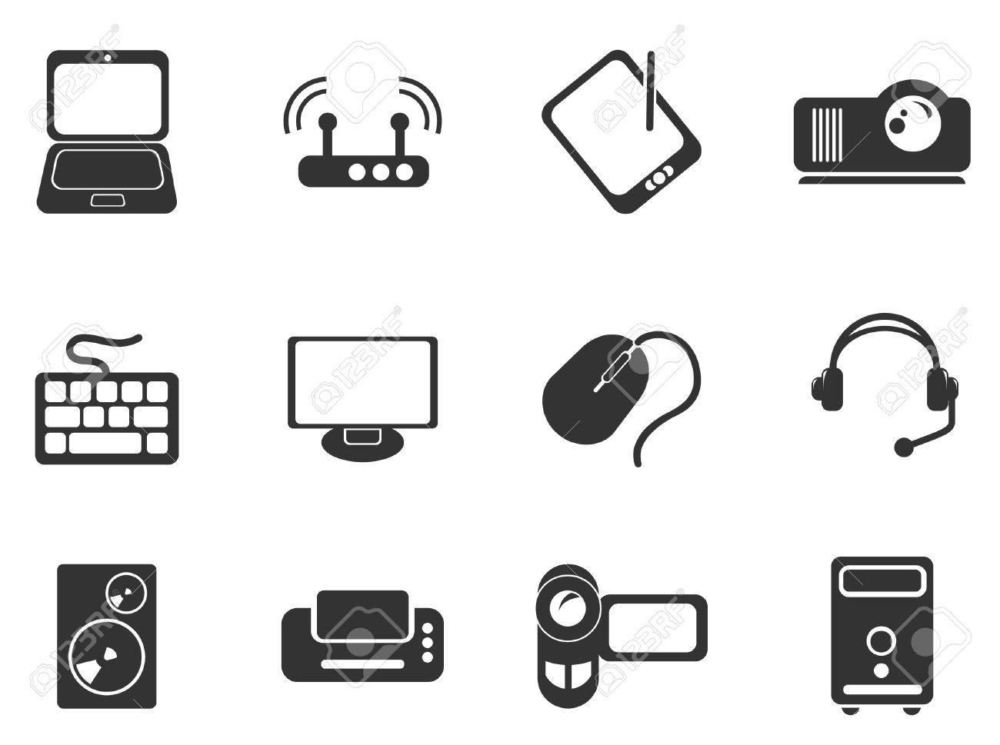

Increasing yields and food supplies

As the population continues to explode, there is an urgent need to find better ways to engage in agriculture. With the help of various governments, farmers are trying to achieve more yield with the help of IoT (in fact, this is the fastest growing field within this space).
The insights gained from all the collected data is helping farmers achieve a better yield on their ROI.
IoT sensors monitor nutrients, soil moisture, and also control water usage. Further, growth is determined by custom fertilizer. This is just the beginning of IoT in agriculture, so it will be interesting to see how it changes the way we grow and consume food.
Security management
Every company across all industries needs encryption and password management. Enterprises can be more secure with IoT as clothing with biometric sensing, facial recognition, and footprint identity can unlock doors and turn on lights without ever having to swipe a card (that can be easily lost).
Furthermore, time cards can be punched automatically, stocks can be managed efficiently, and security can track your every move while on the premises. All of this will have a direct impact on employee productivity and your bottom line.
Maintenance of equipment
When something breaks at home or at work, we often have to obtain replacement parts. Now imagine the replacement parts arriving before an appliance even breaks?
That’s what sensors in our devices can do when they recognize the wear and tear in aging parts that need repair. It’s already happening as printers can order replacement cartridges automatically from Amazon just before it runs out.